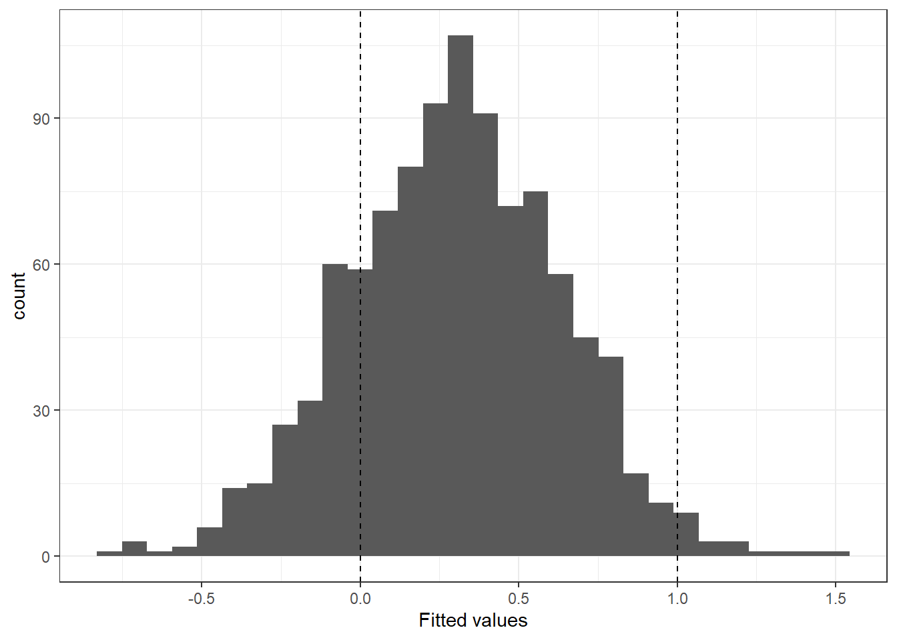
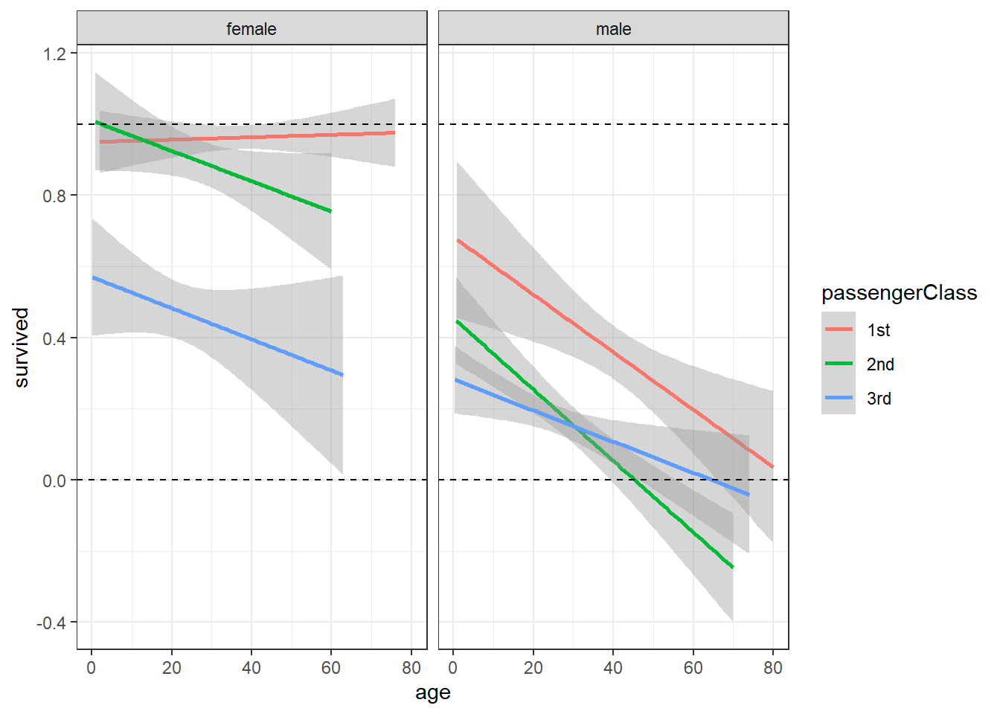
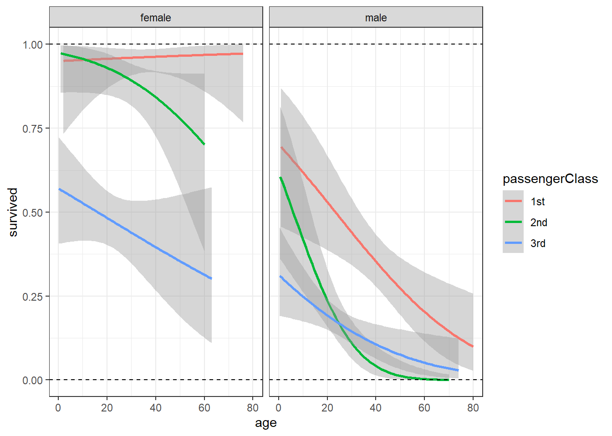
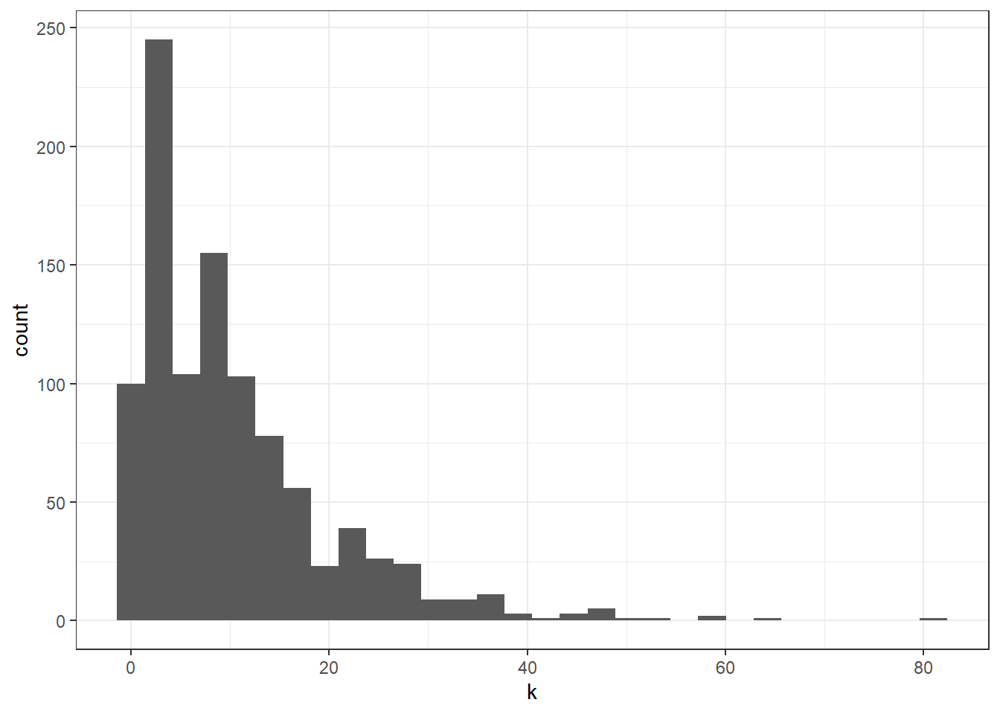
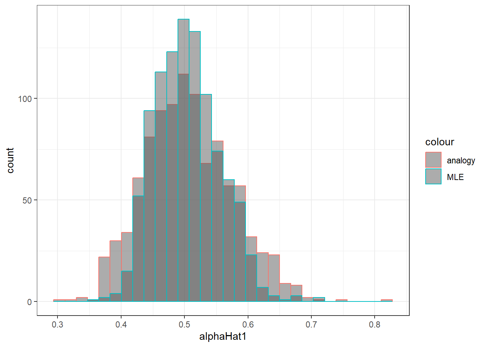
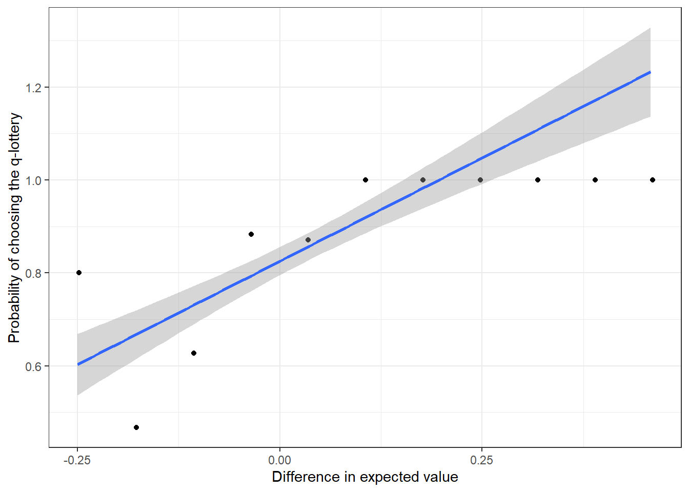
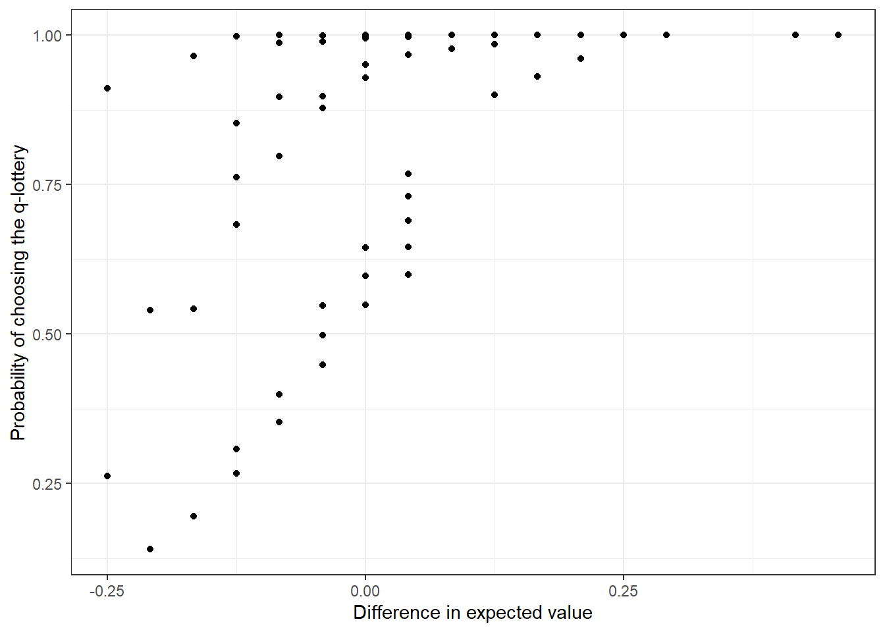
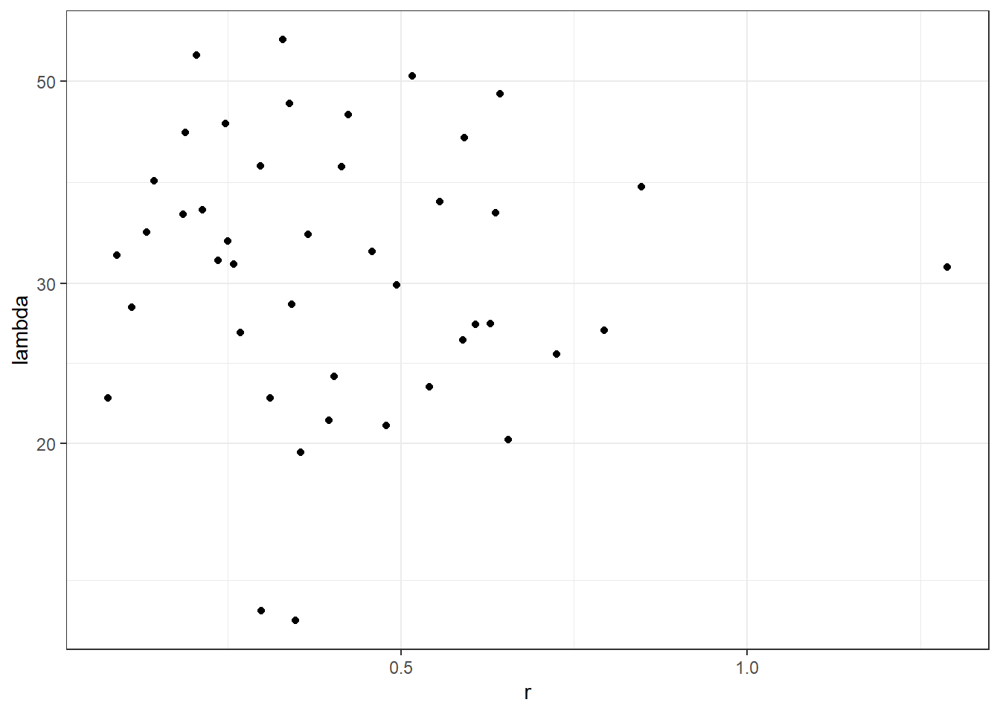

12 Limited dependent variable models and maximum likelihood estimation
12.1 Motivation: The linear probability model works 134% of the time
Consider a standard linear regression model, except that our left-hand-side variable \(Y\) is binary. That is, it can only take on values of 0 and 1:
\[ \begin{aligned} Y_i&=\beta_0+\beta_1X_i+\epsilon_i\\ E[\epsilon_i]&=0\\ E[\epsilon_i\mid X]&=0\\ V[\epsilon_i]&=\sigma^2 \end{aligned} \]
Note that because this is a linear regression model, we can interpret its conditional mean just as we would if we had a continuous \(Y\):
\[ E[Y_i\mid X_i]=\beta_0+\beta_1X_i \]
However, since we have a binary variable, we can also interpret this expectation as the probability that \(Y_i=1\) given \(X\):
\[ \Pr[Y_i=1\mid X_i]=E[Y_i\mid X_i]=\beta_0+\beta_1X_i \]
This means that our model’s predictions of a probability can be out of the interval \((0,1)\), which goes against what we know about probabilities! This on its own may not be a problem for us if we are trying to do causal inference (because we are interested in getting an unbiased estimate of \(\beta_1\), not \(E[Y\mid X]\)), but we can use this information to derive something somewhat more alarming. What about our “no endogenity” assumption \(E[\epsilon_i\mid X]=0\)? We just assumed that it was true. Let’s see if we can work it out. Note that:
\[ \begin{aligned} \epsilon_i&=\begin{cases} 1-\beta_0-\beta_1X_i&\text{if } Y_i=1\\ -\beta_0-\beta_1X_i&\text{if }Y_i=0 \end{cases} \\ E[\epsilon_i\mid X_i,Y_i]&=\begin{cases} 1-\beta_0-\beta_1X_i&\text{if } Y_i=1\\ -\beta_0-\beta_1X_i&\text{if }Y_i=0 \end{cases}\\ E[\epsilon_i\mid X_i]&=\Pr(Y_i=1\mid X_i)(1-\beta_0-\beta_1X_i)+\Pr(Y_i=0\mid X_i)(-\beta_0-\beta_1X_i)\\ &=\Pr(Y_i=1\mid X_i)-\beta_0-\beta_1X_i \end{aligned} \]
which cannot be zero for any \(X_i\), because \(\Pr(Y_i=1\mid X_i)\in(0,1)\), and \(\beta_0+\beta_1X_i\) is unbounded. Therefore \(\hat\beta_1\) is biased! That is, we would like to interpret \(\hat\beta_1\) as “a 1-unit increase in \(X\) will increase the probability that \(Y=1\) by \(\hat\beta_1\) units”, but this cannot be true. This is also a problem for consistency as well.
Let’s do a quick simulation to see whether this checks out. Specifically, let
\[ \Pr(Y_i=1\mid X_i)=\min\{\max\{0+1X_i,0\},1\} \] and then see if OLS gets us the correct \(\beta_1\):
set.seed(42)
d<-(tibble(X = rnorm(1000))
%>% rowwise()
%>% mutate(PrY1 = min(max(X,0),1),
Y = 1*(PrY1>runif(1))
)
)
ols1<-lm(data=d,formula=Y~X)
stargazer(ols1,type="html")| Dependent variable: | |
| Y | |
| X | 0.334*** |
| (0.010) | |
| Constant | 0.309*** |
| (0.010) | |
| Observations | 1,000 |
| R2 | 0.534 |
| Adjusted R2 | 0.533 |
| Residual Std. Error | 0.313 (df = 998) |
| F Statistic | 1,141.896*** (df = 1; 998) |
| Note: | p<0.1; p<0.05; p<0.01 |
Note that we set this up so that the effect of \(X\) on \(Y\) should be 1, as long as \(X\in(0,1)\), but we get a much smaller answer. While we’re here, let’s check the predictions:
( ggplot(data=tibble(fitted=ols1$fitted.values),aes(x=fitted))
+geom_histogram()
+theme_bw()
+geom_vline(xintercept=c(0,1),linetype="dashed")
+xlab("Fitted values")
)
So a substantial fraction of our predictions don’t make sense either.
We have shown that this is a problem in theory, which is about as well as we can do for bias (i.e. we can never formally test the endogeneity condition), but what do the predictions look like for real data. For example, in the Titanic survival datset:
d<-(read.csv("https://vincentarelbundock.github.io/Rdatasets/csv/carData/TitanicSurvival.csv")
%>% mutate(survived=ifelse(survived=="yes",1,0))
)
(
ggplot(d,aes(x=age,y=survived,color=passengerClass))
+geom_smooth(method="lm",formula="y~x")
+facet_wrap(~sex)
+theme_bw()
+geom_hline(yintercept=c(0,1),linetype="dashed")
)
So we are running into problems with predictions, especially for older males in 2nd and 3rd class.
12.2 A practical solution: Ensure that predictions are always valid
The solution to this problem is to estimate a model whose predictions cannot be (for the binary \(Y\) case) less than zero or greater than one. Mathematically, we transform our linear model
\[ Y_i=\beta_0+\beta_1X_{1,i}+\beta_2X_{2,i}+\ldots+\epsilon_i \] so that our new predictions can only be on the unit interval. How do we do this? What we need is a function that takes a real number, and returns a number on the unit interval. Fortunately in statistics we know about a lot of those, because cumulative density functions do exactly this! So instead of modeling our predictions as:
\[ \Pr(Y_i=1\mid X_i)=\beta_0+\beta_1X_i \]
which we have shown to produce nonsensical predictions, we take this linear index \(\beta_0+\beta_1X_i\), and stick it inside a cumulative density function. For instance, one popular choice is the standard normal cumulative density function:
\[ \Pr(Y_i=1\mid X_i)=\Phi\left(\beta_0+\beta_1X_i\right) \]
This way, no matter what values \(\beta_0\), \(\beta_1\), and \(X_i\) take on, our predictions will always be in \((0,1)\). For example, if I take this model to the Titanic survival dataset, this is what the predictions look like:
(
ggplot(d,aes(x=age,y=survived,color=passengerClass))
+geom_smooth(formula="y~x", method="glm",method.args=list(family = binomial(link="probit")))
+facet_wrap(~sex)
+theme_bw()
+geom_hline(yintercept=c(0,1),linetype="dashed")
)
Notice now how all of the predictions (and their confidence intervals) are in the unit interval.
In order to estimate these models in R, we just use the glm (i.e. “generalized linear model”) command:
reg<-list()
reg[["female"]]<-glm(data=d %>% filter(sex=="female"),formula=survived~as.factor(passengerClass)*age,family=binomial(link="probit"))
reg[["male"]]<-glm(data=d %>% filter(sex=="male"),formula=survived~as.factor(passengerClass)*age,family=binomial(link="probit"))
stargazer(reg,type="html",column.labels=names(reg))| Dependent variable: | ||
| survived | ||
| female | male | |
| (1) | (2) | |
| as.factor(passengerClass)2nd | 0.304 | -0.226 |
| (0.715) | (0.457) | |
| as.factor(passengerClass)3rd | -1.470** | -1.016*** |
| (0.593) | (0.375) | |
| age | 0.004 | -0.023*** |
| (0.014) | (0.008) | |
| as.factor(passengerClass)2nd:age | -0.027 | -0.028* |
| (0.020) | (0.014) | |
| as.factor(passengerClass)3rd:age | -0.015 | 0.004 |
| (0.017) | (0.011) | |
| Constant | 1.649*** | 0.529* |
| (0.553) | (0.320) | |
| Observations | 388 | 658 |
| Log Likelihood | -158.931 | -301.191 |
| Akaike Inf. Crit. | 329.862 | 614.381 |
| Note: | p<0.1; p<0.05; p<0.01 | |
12.3 Interpreting the coefficients of the probit and logit models
One drawback to the probit model is that we can no longer interpret the coefficients directly as the effect of \(X\) on \(Y\). To see this, let’s take the predicted probability from a probit and work out its derivative with respect to \(X\):
\[ \begin{aligned} \Pr(Y_i=1\mid X)&=\Phi\left(\beta_0+\beta_1X_i\right)\\ \frac{\partial\Pr(Y_i=1\mid X)}{\partial X_i}&=\beta_1\Phi'\left(\beta_0+\beta_1X_i\right)\\ &=\beta_1\phi\left(\beta_0+\beta_1X_i\right) \end{aligned} \]
where \(\phi(x)=\Phi'(x)\) is the stndard normal density function. Since it is a density function, it is always positive, and so we can always interpret the sign of \(\beta_1\) at the direction of the effect, but we cannot interpret it as the magnitude of the effect. Furthermore, our expression for the marginal effect of \(X\) on \(Y\) is now a function of \(X\), so we have to take this into account somehow. Probably the most sensible solution, unless we’ve got a good reason to do otherwise, is to report the average marginal effect, but calculating this quantity for every row of our dataset, then taking the mean:
\[ \text{average marginal effect}=\frac{1}{N}\sum_{i=1}^N\beta_1\phi\left(\beta_0+\beta_1X_i\right) \]
that is, if we randomly selected an observation in our dataset, this would be our estimat of its marginal effect.
While this may seem like a complicated beast to compute, it is not for your computer, and is easily handled in the mfx package. For example, here is what we get for a simple bivariate probit using the Titanic dataset:
library(mfx)
reg<-glm(data=d ,formula=survived~age,family=binomial(link="probit"))
mfx1<-probitmfx(formula=survived~age,data=d,atmean=FALSE)
mfx1 %>% print()## Call:
## probitmfx(formula = survived ~ age, data = d, atmean = FALSE)
##
## Marginal Effects:
## dF/dx Std. Err. z P>|z|
## age -0.0018876 0.0010529 -1.7927 0.07302 .
## ---
## Signif. codes: 0 '***' 0.001 '**' 0.01 '*' 0.05 '.' 0.1 ' ' 1In words: passanges who were 1 year older were 0.19 percentage points less likely to survive.
For discrete variables, we need to make sure that R knows that these are discrete variables. This is done either with an indicator function I() or using as.factor():
## Call:
## probitmfx(formula = survived ~ I(age >= 18), data = d, atmean = FALSE)
##
## Marginal Effects:
## dF/dx Std. Err. z P>|z|
## I(age >= 18)TRUE -0.138082 0.043419 -3.1802 0.001472 **
## ---
## Signif. codes: 0 '***' 0.001 '**' 0.01 '*' 0.05 '.' 0.1 ' ' 1
##
## dF/dx is for discrete change for the following variables:
##
## [1] "I(age >= 18)TRUE"In words: adults were 14 percentage points less likely to survive than children.
Interaction terms make this even trickier, but not impossible. To see this, let’s take the derivative of a model’s predictions that has an interaction:
\[ \begin{aligned} \Pr(Y_i=1\mid X,Z)&=\Phi(\beta_0+\beta_1 X_i+\beta_2 Z_i+\beta_3 X_iZ_i)\\ \frac{\partial \Pr(Y_i=1\mid X,Z)}{\partial X}&=(\beta_1+\beta_3 Z_i)\phi(\beta_0+\beta_1 X_i+\beta_2 Z_i+\beta_3 X_iZ_i) \end{aligned} \]
Note the extra term \(\beta_3Z_i\) at the front. We need to make sure that R understands that we have an interraction in our model for it to correctly compute this. For example:
## Call:
## probitmfx(formula = survived ~ sex + age + sex * age, data = d,
## atmean = FALSE)
##
## Marginal Effects:
## dF/dx Std. Err. z P>|z|
## sexmale -0.2684774 0.0785128 -3.4195 0.0006273 ***
## age 0.0038669 0.0014290 2.7061 0.0068086 **
## sexmale:age -0.0076227 0.0018341 -4.1560 3.238e-05 ***
## ---
## Signif. codes: 0 '***' 0.001 '**' 0.01 '*' 0.05 '.' 0.1 ' ' 1
##
## dF/dx is for discrete change for the following variables:
##
## [1] "sexmale"that is, the function probitmfx thinks that there are three marginal effects for this model, when there are only two variables on the right-hand side! We cannot interpret any of these marginal effects correctly.
12.4 But how do we estimate it? Maximum likelihood
Recall that when we derived the equation for the slope estimator of OLS, we motivated the problem by trying to minimize the sum of squared residuals of our estimated mode. That is, for bivariate OLS:
\[ \hat\beta_0,\hat\beta_1=\arg\min\left\{\sum_{i=1}^N\left(Y_i-\beta_0-\beta_1X_i\right)^2\right\} \]
If we were to do the same for the probit model, we would minimize the squared difference between our model’s predictions (\(\Phi(\beta_0+\beta_1X_i)\)), and our outcome:
\[ \hat\beta_0,\hat\beta_1=\arg\min\left\{\sum_{i=1}^N\left(Y_i-\Phi(\beta_0+\beta_1X_i)\right)^2\right\} \]
This method is called nonlinear least squares, and while it might be an OK method of finding our estimates, for a variety of reasons that we will get into later, it is not how one typically estimates a probit model.
Instead, we will be using maximum likelihood estimation (MLE). This technique takes a formal statement about how our outcome variable \(Y\) is generated by our parameters \(\theta\) and other observaed variables \(X\), and constructs a different optimization problem to solve.
For the probit case, note that we know the following about our data-generating process:
\[ \begin{aligned} \Pr(Y_i=1\mid X_i)&=\Phi(\beta_0+\beta_1X_i)\\ \implies p(Y_i\mid X_i)&=\begin{cases} \Phi(\beta_0+\beta_1X_i) &\text{if } Y_i=1\\ 1-\Phi(\beta_0+\beta_1X_i)&\text{otherwise} \end{cases}\\ &=\Phi(\beta_0+\beta_1X_i)^{Y_i}\left(1-\Phi(\beta_0+\beta_1X_i)\right)^{1-Y_i} \end{aligned} \]
which is also equivalent to stating that:
\[ Y_i\mid X_i\sim\mathrm{Bernoulli}(\Phi(\beta_0+\beta_1X_i)) \]
That is, we have completely characterized the conditional distribution \(Y_i\mid X_i\). If from here, we are further able to assume that our data are independent, then we can write:
\[ Y_i\mid X_i\sim iid\ \mathrm{Bernoulli}(\Phi(\beta_0+\beta_1X_i)) \]
and we can write the joint probability mass function of our data conditional on \(X\) and our parameters \(\theta=(\beta_1,\beta_2)\) as:
\[ \begin{aligned} p(Y\mid \theta ,X)&=\prod_{i=1}^Np(Y_i\mid \theta,X_i)\\ &=\prod_{i=1}^N\Phi(\beta_0+\beta_1X_i)^{Y_i}\left(1-\Phi(\beta_0+\beta_1X_i)\right)^{1-Y_i} \end{aligned} \]
MLE takes this likelihood function, a formal statement of our data-generating process, and estimates the parameters \(\theta\) by maximizing it. That is, while we typically think of \(p(Y\mid \theta ,X)\) as a function of \(Y\), here we are thinking of it as a function of \(\theta\), and so:
\[ \hat\theta=\arg\max_\theta p(Y\mid \theta,X) \]
Why are we doing this? Well, firstly, there are some nice mathematical results that state that if we correctly specify the distribution \(p(Y\mid \theta,X)\), then \(\hat\theta\) (under a further set of technical assumptions) will be (i) consistent, and (ii) have the smallest possible variance. Practically though, it helps me to think about what small and large values of \(p(Y\mid \theta,X)\) tell us about how well our model is fitting our data as we change \(\theta\). Specifically, note that if \(p(Y\mid \theta,X)\) is large, then we can say that if the data were generated using parameters \(\theta\), we would not be too surprised by our dataset. On the other hand if \(p(Y\mid \theta,X)\) is small, then it is unlikely that we would have observed our dataset \(Y\) if \(\theta\) was the true value. Hence, we are finding the \(\theta\) that makes us the least surprised by our dataset \(Y\).
In practice, we take one more step before attempting to maximize the likelihood, which is usually a task for our computer, not us. Since we have assumed that our data are independent, this has allowed us to write the likelihood as a product of the probability mass functions of each observation. Taking logs of this function yields the log-likelihood, which is usually much easier for your computer to maximize.
\[ \begin{aligned} \log p(Y\mid \theta ,X)&=\log\prod_{i=1}^Np(Y_i\mid\theta, X_i)\\ &=\sum_{i=1}^N\log p(Y_i\mid \theta,X_i)\\ &\equiv \mathcal L(\theta) \end{aligned} \]
For our example of the probit model, this means that we can write:
\[ \begin{aligned} \mathcal L(\theta)&=\log\left(\prod_{i=1}^N\Phi(\beta_0+\beta_1X_i)^{Y_i}\left(1-\Phi(\beta_0+\beta_1X_i)\right)^{1-Y_i}\right)\\ &=\sum_{i=1}^N\left[Y_i\log\left(\Phi(\beta_0+\beta_1X_i)\right)+(1-Y_i)\log\left(1-\Phi(\beta_0+\beta_1X_i)\right)\right]\\ \implies \hat\beta_0,\hat\beta_1&=\arg\max_{\beta_1,\beta_2}\left\{\sum_{i=1}^N\left[Y_i\log\left(\Phi(\beta_0+\beta_1X_i)\right)+(1-Y_i)\log\left(1-\Phi(\beta_0+\beta_1X_i)\right)\right]\right\} \end{aligned} \]
As mentioned above, this is not something that can be solved by hand, but your computer will not have much trouble with it most of the time.
12.5 Doing inference with maximum likelihood
As with linear regression, we will want to test parameter restrictions of our models. For example, with the Titanic datset, we might want to test whether being older than 18 years had any effect on survival. The restricted and unrestricted models for this test, with some reasonable controls added as well, are:
reg1<-glm(data=d,formula=survived~age+I(age>=18)+sex+as.factor(passengerClass),family=binomial(link="probit"))
reg2<-glm(data=d,formula=survived~age+sex+as.factor(passengerClass),family=binomial(link="probit"))
stargazer(reg1,reg2,type="html")| Dependent variable: | ||
| survived | ||
| (1) | (2) | |
| age | -0.017*** | -0.019*** |
| (0.004) | (0.004) | |
| I(age > = 18) | -0.139 | |
| (0.160) | ||
| sexmale | -1.481*** | -1.486*** |
| (0.094) | (0.094) | |
| as.factor(passengerClass)2nd | -0.744*** | -0.760*** |
| (0.131) | (0.130) | |
| as.factor(passengerClass)3rd | -1.290*** | -1.303*** |
| (0.127) | (0.127) | |
| Constant | 2.089*** | 2.055*** |
| (0.186) | (0.181) | |
| Observations | 1,046 | 1,046 |
| Log Likelihood | -491.901 | -492.276 |
| Akaike Inf. Crit. | 995.802 | 994.553 |
| Note: | p<0.1; p<0.05; p<0.01 | |
Just like in linear regression, one way to test this restriction is to compare the two models’ measures of goodness-of-fit. If the unrestricted model does not substatially fit the data better than the restricted model, then we fail to reject the null hypothesis. For maximum likelihood, we use the log-likelihood as the measure of goodness of fit, and the following result:
\[ 2\left(\log L^{\text{unrestricted}}-\log L^{\text{restricted}}\right)\xrightarrow[]{d}\chi^2_q \]
where \(q\) is the number of parameter restrictions. Remember though, that since the maximized log-likelihoods are only a function of the parameter estimates, and not their standard errors, this test will not respect all the work you have done to accurately express the uncertainty in your parameters! This is just like using comparing \(R^2\)s of the restricted and unrestricted models for linear regression. Fortunately, you can carry your standard error calculations through your hypothesis test using waldtest, just like you did with linear regression.
12.6 How some estimators relate to maximum likelihood
12.6.1 Sample mean for a Bernoulli (coin flip) variable
In the early chapters of this material, we learned about why sample means were useful estimators. For Bernoulli random variables, we could estimate the probability of a success by taking the sample mean. Let’s see how we can do it with maximum likelihood.
We start with the assumption that our data are distributed according to: \[\begin{align} X_i&\sim iid \mathrm{Bernoulli}(\theta) \end{align}\] and wish to estimate \(\theta\). The probability mass function of one observation in our data is: \[\begin{align} p_{X_i}(x)&=\begin{cases} \theta &\text{if } x = 1\\ 1-\theta &\text{if } x = 0\\ 0&\text{otherwise} \end{cases}\\ &=\theta^{I(x=1)}(1-\theta)^{I(x=0)} \end{align}\] Since we have assumed that the \(X_i\)s are iid, we can multiply the probability of each observation together to get the probability mass function for all rows of our data. \[\begin{align} p_{X_1,X_2,\ldots,X_N}(x_1,x_2,\ldots,x_N;\theta)&=\prod_{i=1}^Np_{X_i}(x_i)\\ &=\prod_{i=1}^N \theta^{I(x=1)}(1-\theta)^{I(x=0)} \end{align}\] which is also the likelihood function evaluated at \(\theta\). We take logs to get the log-likelihood (because it is easier to maximize): \[\begin{align} \log L(\theta)&=\log\left[\prod_{i=1}^N \theta^{I(X_i=1)}(1-\theta)^{I(X_i=0)}\right]\\ &=\sum_{i=1}^N\log\left[\theta^{I(X_i=1)}(1-\theta)^{I(X_i=0)}\right]\\ &=\sum_{i=1}^N\left[I(X_i=1)\log(\theta)+I(X_i=0)\log(1-\theta)\right]\\ &=N\left[\bar X \log(\theta)+(1-\bar X)\log(1-\theta)\right] \end{align}\] We find the maximum likelihood estimator by taking the derivative and setting it equal to zero: \[\begin{align} \hat\theta &=\arg\max_\theta \log L(\theta)\\ \text{FOC:}\quad 0&=N\left[\frac{\bar X}{\hat\theta}-\frac{1-\bar X}{1-\hat\theta}\right]\\ \hat\theta&=\bar X \end{align}\] That is, the maximum likelihood estimator of \(\theta\) is also the sample mean!
Now suppose that we want to test that \(\theta\) is equal to a specific value, say \(\theta_0\). Substituting \(\hat\theta\) into the likelihood function yields: \[\begin{align} L^U&=N\left[\bar X\log(\bar X)+(1-\bar X)\log(1-\bar X)\right] \end{align}\] and our restricted likelihood is: \[\begin{align} L^R&=N\left[\bar X\log(\theta_0)+(1-\bar X)\log(1-\theta_0)\right] \end{align}\] So the likelihood ratio test statistic is: \[\begin{align} LR&=2\left[L^U-L^R\right]\\ &=2N\left[\bar X\log(\bar X)+(1-\bar X)\log(1-\bar X) -\bar X\log(\theta_0)-(1-\bar X)\log(1-\theta_0)\right]\\ &=2N\left[\bar X \log(\bar X/\theta_0)-(1-\bar X)\log((1-\bar X)/(1-\theta_0))\right] \end{align}\] How do we know that this thing is distributed \(\chi^2_1\) for large \(N\)? Note that the likelihood ratio is a function of \(\bar X\), the sample mean, and \(\theta_0\), the value of \(\theta\) if \(H_0\) is true. \(\theta_0\) is fixed for the hypothesis, so it is really only a function of \(\bar X\). Let’s make a 2nd-order Taylor series approximation of this function: \[\begin{align} LR(\bar X) &\approx LR(\theta_0)+(\bar X-\theta_0)\frac{\partial LR(x)}{\partial \bar X}\bigg|_{x=\theta_0}+\frac{1}{2}(\bar X-\theta_0)^2\frac{\partial^2 LR(x)}{\partial \bar X^2}\bigg|_{x=\theta_0}\\ &=0+(\bar X-\theta_0)2N\left[\log\left(\frac{x}{\theta_0}\right)+\frac{x}{x}-\log\left(\frac{1-x}{1-\theta_0}\right)+\frac{1-x}{1-x}\right]_{x=\theta_0}\label{eq:ML-bernoulliLR}\\ &\quad\quad+\frac{1}{2}(\bar X-\theta_0)^22N\left[\frac{1}{x}+\frac{1}{1-x}\right]_{x=\theta_0}\nonumber \end{align}\] Noting that everything on the first line of the above expression is zero: \[\begin{align} LR(\bar X) &\approx \frac{1}{2}(\bar X-\theta_0)^2\frac{2N}{\theta_0(1-\theta_0)}\\ &=\left(\frac{\sqrt{N}(\bar X-\theta_0)}{\sqrt{\theta_0(1-\theta_0)}}\right)^2 \end{align}\] So when the null is true, the thing inside the parentheses is asymptotically standard normal. Since the LR is approximately this thing squared (the approximation gets better as \(N\to\infty\)), it follows that: \[\begin{align} LR(\bar X)\xrightarrow[]{d}\chi^2_1 \end{align}\]
12.6.2 Linear regression
Let’s restrict our attention to the bivariate linear regression model. The data-generating process is often described as: \[\begin{align} Y_i&=\beta_1+\beta_2X_i+\epsilon_i\\ E[\epsilon_{i}\mid X]&=0\quad& \\ V[\epsilon_i\mid X]&=\sigma^2,\quad&\text{(homoskedasticty)}\\ E[\epsilon_iX_i]&=0,\quad&\text{(exogeneity)} \end{align}\] Note that we have already assumed a few things here (specifically, homoskedasticity). Now, we are going to make a very restrictive assumption: \[\begin{align} \epsilon_i\mid X_i &\sim iid N(0,\sigma^2) \end{align}\] We have seen lots of normals show up in our analysis, but this is not usually where they show up: usually we make an argument that a sample mean is approximately normal because \(N\) is large. Here, on the other hand, we have assumed that the errors are normal. This is therefore a much more restrictive model than the one we write down when we do OLS, but let’s see where it gets us.
The parameters we wish to estimate are the intercept and slope coefficients, \(\beta_0\) and \(\beta_1\), as well as the variance parameter \(\sigma^2\). First note that: \[\begin{align} Y_i\mid X_i &\sim N(\beta_0+\beta_1X_i, \sigma^2)\quad \text{(independent)} \end{align}\] Here I don’t write ``iid’’ because the distribution of $Y_iX_i $ changes with \(X_i\). Using the above result this information, we can construct the pdf of one observation; \[\begin{align} f_{Y\mid X}(y;\beta_0,\beta_1,\sigma^2)&=\phi(y;\beta_0+\beta_1X_i,\sigma^2)\\ &=\frac{1}{\sqrt{2\pi\sigma^2}}\exp\left(-\frac{1}{2\sigma^2}(y-\beta_0-\beta_1X_i)^2\right) \end{align}\] Usually I would just leave this as the first line, with \(\phi(\cdot;\mu,\sigma^2)\) representing the normal density function with mean \(\mu\) and variance \(\sigma^2\), however we need to use some properties of this to derive the estimator for \((\beta_0,\beta_1,\sigma^2)\). Thats the probability (density), or likelihood, of observing {} row of the data. Now we assume that each rows are independent, so we can multiply these densities together to get the probability density function of th data when the parameters are known: \[\begin{align} f&_{Y_1,Y_2,\ldots,Y_N; X_1,X_2,\ldots,X_N}(y; \beta_0,\beta_1,\sigma^2)=\prod_{i=1}^Nf_{Y_i\mid X_i}(Y_i;\beta_0,\beta_1,\sigma^2)\\ &=\prod_{i=1}^N\frac{1}{\sqrt{2\pi\sigma^2}}\exp\left(-\frac{1}{2\sigma^2}(Y_i-\beta_0-\beta_1X_i)^2\right) \end{align}\] This is the likelihood, which in principle you could go ahead and maximize, but it is much easier to maximize the log-likelihood: \[\begin{align} \log L(\beta_0,\beta_1,\sigma^2)&=\log\left(\prod_{i=1}^N\frac{1}{\sqrt{2\pi\sigma^2}}\exp\left(-\frac{1}{2\sigma^2}(Y_i-\beta_0-\beta_1X_i)^2\right)\right)\\ &=\sum_{i=1}^N\log\left(\frac{1}{\sqrt{2\pi\sigma^2}}\exp\left(-\frac{1}{2\sigma^2}(Y_i-\beta_0-\beta_1X_i)^2\right)\right)\\ %%% &=\sum_{i=1}^N\left[ \log 0-\frac12\log(2\pi\sigma^2)-\frac{1}{2\sigma^2}(Y_i-\beta_0-\beta_1X_i)^2 \right]\\ &=-\underbrace{\frac{N}{2}\log{2\pi\sigma^2}}_A-\underbrace{\frac{1}{2\sigma^2}\sum_{i=1}^N(Y_i-\beta_0-\beta_1X_i)^2}_B \end{align}\] Note that the only component of this expression that contains \(\beta_0\) and \(\beta_1\) is \(B\). Therefore, we don’t need to consider \(A\) if we just want to estimate \(\beta_0\) and \(\beta_1\). Furthermore, since \(1/2\sigma^2>0\), we don’t need to consider this constant either. So maximizing th log-likelihood with respect to the slope and intercept term is equivalent to the following optimization problems: \[\begin{align} (\hat\beta_0,\hat\beta_1)&=\arg\max_{\beta_0,\beta_1}\left[-\sum_{i=1}^N(Y_i-\beta_0-\beta_1X_i)^2\right]\\ (\hat\beta_0,\hat\beta_1)&=\arg\min_{\beta_0,\beta_1}\left[\sum_{i=1}^N(Y_i-\beta_0-\beta_1X_i)^2\right] \end{align}\] That is, \(\arg\max_x g(x)\) returns the \(x\) that maximizes \(g(x)\) (i.e.~the {} of \(g\) that maximizes \(g\)), whereas \(\max_x g(x)\) equals the maximum value of \(g(x)\). Importantly here, the second optimization problem is one that we’ve seen before: \(Y_i-\hat\beta+0-\hat\beta_1X_i\) is the residual of observation \(i\), and so the above minimization problem is exactly the same minimization problem we used to derive the OLS estimator: we are minimizing the sum of squared residuals! Hence, without further derivations, we know that: \[\begin{align} \hat\beta_1^\text{ML}=\hat\beta_1^\text{OLS}&=\frac{\sum_{i=1}^N(Y_i-\bar Y)(X_i-\bar X)}{\sum_{i=1}^N(X_i-\bar X)^2}\\ \hat\beta_0^\text{ML}=\hat\beta_0^\text{OLS}&=\bar Y -\hat\beta_1^\text{OLS}\bar X \end{align}\] Letting \(SSR\) equal the (minimized) residual sum of squares, we can write the estimator for \(\sigma^2\) as: \[\begin{align} \hat\sigma^2&=\arg\max_{\sigma^2}\left[-\frac{N}{2}\log{2\pi\sigma^2}-\frac{1}{2\sigma^2}SSR\right]\\ \text{FOC:}\quad 0&=-\frac{N}{2\hat\sigma^2}+\frac{SSR}{2(\hat\sigma^2)^2}\\ 0&=-N\hat\sigma^2+SSR\\ \hat\sigma^2&=\frac{SSR}{N}=\frac 1N\sum_{i=1}^N(Y_i-\hat\beta_0-\hat \beta_1X_i)^2 \end{align}\] which is almost the equation we use for OLS (we usually divide by \(N-k\) to eliminate bias).
OK, that’s estimation. Now suppose that we wish to test a restriction. Note that the maximized log-likelihood can be simplified to: \[\begin{align} \max \log L &=-\frac{N}{2}\log(2\pi SSR/N)-\frac{N}{2 SSR} SSR\\ &=-\frac{N}{2}\left[\log(SSR)+\log(2\pi/N)+1\right] \end{align}\] Letting \(RSS\) and \(USS\) be the restricted and unrestricted sum of squared residuals respectively, the likelihood ratio test statistic is: \[\begin{align} LR&=2\left[\log L^U-\log L^R\right]\\ &=-\frac{N}{2}\left[\log(USS)-\log(RSS)\right]\\ &=\frac{N}{2}\log(RSS/USS) \end{align}\] Which is qualitatively what we’re doing with an \(F\)-test in OLS: comparing how much worse our restricted model fits the data.
12.7 Some examples of estimating parameters using maximum likelihood
12.7.1 Geometric distribution
The geometric distribution can be motivated as the number of times you need to flip a weighted coin until you flip the first head. The one parameter \(\theta\) is the probability that the coin comes up heads. Therefore, the probability mass function is:
\[ \begin{aligned} p(k;\theta)&=\begin{cases} (1-\theta)^{k-1}\theta& k=1, 2, 3, \ldots\\ 0&\text{otherwise} \end{cases} \end{aligned} \]
Here is a simulated dataset of draws from the geometric distribution:

Let’s estimate \(\theta\).
The likelihood of observing our data \(\{k_i\}_{i=1}^N\) if \(\theta\) was the true value, assuming independence, is:
\[ \begin{aligned} \prod_{k=1}^Np(k_i;\theta)&=\prod_{k=1}^N(1-\theta)^{k_i-1}\theta \end{aligned} \]
So the log-likelihood is:
\[ \begin{aligned} \mathcal L(\theta)&=\sum_{i=1}^N\left[(k_i-1)\log(1-\theta)+\log(\theta)\right] \end{aligned} \]
The first-order condition is:
\[ \begin{aligned} 0&=\sum_{i=1}^N\left[-\frac{k_i-1}{1-\hat\theta}+\frac{1}{\hat\theta}\right]\\ &=-\frac{\sum_{i=1}^N(k_i-1)}{1-\hat\theta}+\frac{N}{\hat\theta}\\ \frac{\sum_{i=1}^N(k_i-1)}{1-\hat\theta}&=\frac{N}{\hat\theta}\\ \hat\theta\sum_{i=1}^N(k_i-1)&=N(1-\hat\theta)\\ \hat\theta\left(N+\sum_{i=1}^N(k_i-1)\right)&=N\\ \hat\theta&=\frac{N}{N+\sum_{i=1}^N(k_i-1)} \end{aligned} \]
Using what we have, we can therefore calculate our estimate:
## [1] 0.0969744Or, we could pass the likelihood function to R:
nlogL<-function(theta) {
-sum((k-1)*log(1-theta)+log(theta))
}
estimates<-stats4::mle(nlogL,start=list(theta=0.5))## Warning in log(theta): NaNs produced
## Warning in log(theta): NaNs produced
## Warning in log(theta): NaNs produced
## Warning in log(theta): NaNs produced
## Warning in log(theta): NaNs produced
## Warning in log(theta): NaNs produced
## Warning in log(theta): NaNs produced
## Warning in log(theta): NaNs produced
## Warning in log(theta): NaNs produced
## Warning in log(theta): NaNs produced
## Warning in log(theta): NaNs produced
## Warning in log(theta): NaNs produced
## Warning in log(theta): NaNs produced
## Warning in log(theta): NaNs produced
## Warning in log(theta): NaNs produced
## Warning in log(theta): NaNs produced
## Warning in log(theta): NaNs produced
## Warning in log(theta): NaNs produced
## Warning in log(theta): NaNs produced
## Warning in log(theta): NaNs produced
## Warning in log(theta): NaNs produced
## Warning in log(theta): NaNs produced##
## Call:
## stats4::mle(minuslogl = nlogL, start = list(theta = 0.5))
##
## Coefficients:
## theta
## 0.09697544estimates<-stats4::mle(nlogL,start=list(theta=0.5),lower=list(theta=0),upper=list(theta=1),method = "Brent")
estimates %>% print()##
## Call:
## stats4::mle(minuslogl = nlogL, start = list(theta = 0.5), method = "Brent",
## lower = list(theta = 0), upper = list(theta = 1))
##
## Coefficients:
## theta
## 0.0969744nlogL2<-function(x) {
-sum((k-1)*log(1-pnorm(x))+log(pnorm(x)))
}
estimates<-stats4::mle(nlogL2,start=list(x=0))
estimates %>% print()##
## Call:
## stats4::mle(minuslogl = nlogL2, start = list(x = 0))
##
## Coefficients:
## x
## -1.298987## x
## 0.0969742412.7.2 Simplified Beta distribution
set.seed(42)
d<-tibble(X = runif(1000)^(1/3.14))
write.csv(d,file="data/BetaSim2023.csv")
nlogL<-function(alpha) {
-sum(log(alpha)+(alpha-1)*log(d$X))
}
nlogL(10)## [1] 707.9252## Warning in log(alpha): NaNs produced
## Warning in log(alpha): NaNs produced
## Warning in log(alpha): NaNs produced##
## Call:
## stats4::mle(minuslogl = nlogL, start = list(alpha = 1))
##
## Coefficients:
## alpha
## 2.989527dsim<-(expand.grid(sim=1:1000,id=1:100)
%>% rowwise()
%>% mutate(X = runif(1)^2)
%>% ungroup()
%>% group_by(sim)
%>% summarize(
alphaHat1=mean(X)/(1-mean(X)),
alphaHat2 = -1/mean(log(X))
)
)
(
ggplot(dsim)
+geom_histogram(aes(x=alphaHat1,color="analogy"),alpha=0.5)
+geom_histogram(aes(x=alphaHat2,color="MLE"),alpha=0.5)
+theme_bw()
)## `stat_bin()` using `bins = 30`. Pick better value with `binwidth`.
## `stat_bin()` using `bins = 30`. Pick better value with `binwidth`.
12.8 An extended example
This example is motivated from David Card’s “Model-based or design-based” lecture.
12.8.1 Data
Hey, John D. “Does repetition improve consistency?.” Experimental economics 4, no. 1 (2001): 5-54.
This dataset comes from an economic experiment. Each participant made 500 decisions between a “\(q\)-lottery” and a “\(p\)-lottery”. One decision was randomly chosen for payment.
library(tidyverse)
library(haven)
set.seed(42)
D<-(read_dta("data/Hey_data12.dta")
# Just focus on the data from one decision-maker for now
%>% filter(id==2)
)
D %>% sample_n(10) %>% knitr::kable()| id | t | q1 | q2 | q3 | q4 | p1 | p2 | p3 | p4 | y |
|---|---|---|---|---|---|---|---|---|---|---|
| 2 | 49 | 0.250 | 0.000 | 0.750 | 0.000 | 0.375 | 0.000 | 0.625 | 0.000 | 1 |
| 2 | 485 | 0.000 | 1.000 | 0.000 | 0.000 | 0.375 | 0.125 | 0.500 | 0.000 | 1 |
| 2 | 321 | 0.000 | 0.250 | 0.750 | 0.000 | 0.000 | 0.625 | 0.000 | 0.375 | 1 |
| 2 | 153 | 0.000 | 0.750 | 0.000 | 0.250 | 0.625 | 0.000 | 0.000 | 0.375 | 1 |
| 2 | 74 | 0.500 | 0.250 | 0.000 | 0.250 | 0.625 | 0.000 | 0.000 | 0.375 | 1 |
| 2 | 228 | 0.000 | 0.000 | 0.875 | 0.125 | 0.125 | 0.000 | 0.250 | 0.625 | 1 |
| 2 | 146 | 0.375 | 0.000 | 0.625 | 0.000 | 0.500 | 0.000 | 0.000 | 0.500 | 1 |
| 2 | 122 | 0.000 | 0.250 | 0.750 | 0.000 | 0.000 | 0.875 | 0.000 | 0.125 | 1 |
| 2 | 500 | 0.375 | 0.125 | 0.500 | 0.000 | 0.500 | 0.125 | 0.375 | 0.000 | 1 |
| 2 | 128 | 0.000 | 0.000 | 0.875 | 0.125 | 0.125 | 0.000 | 0.250 | 0.625 | 1 |
Our variables are:
id: The id of the participant (we’re just focusing on the first one for now)t: The id for the question, this goes from 1 to 500q1-q4: The probabilities for the \(q\)-lotteryp1-p4: The probabilities for the \(p\)-lotteryy: An indicator variable equal to 1 if they chose the \(q\) lottery, and 0 if they chose the \(p\) lottery
We can think of the prizes as being the numbers 0, 1/3, 2/3, and 1, so the probability mass function of prizes for the \(q\)-lottery in decision \(t=49\) is:
\[ p(x)=\begin{cases} 0.250 &\text{if } x = 0\\ 0.000 & \text{if } x =\frac{1}{3}\\ 0.750 & \text{if } x = \frac{2}{3}\\ 0.000 & \text{if } x = 1\\ 0 &\text{otherwise} \end{cases} \]
12.8.2 A research question
Very broadly (we will narrow this down later)
If the expected value of the \(q\) lottery increases relative to the expected value of the \(p\) lottery, how much more likely is it that the pariciapnt will choose the \(q\) lottery?
We can do a quick visualization of this:
D<-(D
%>% mutate(EVq = q2/3+2*q3/3+q4,
EVp = p2/3+2*p3/3+p4,
DEV = EVq-EVp
)
)
(
ggplot(data=D,aes(x=EVq-EVp,y=y))
+stat_summary_bin(fun="mean",geom="point",bins=10)
+geom_smooth(method="lm",formula="y~x")
+xlab("Difference in expected value")
+ylab("Probability of choosing the q-lottery")
+theme_bw()
)
We are already running into a problem. What is it?
But this line is exactly what we estimate when we do:
| Dependent variable: | |
| y | |
| DEV | 0.890*** |
| (0.108) | |
| Constant | 0.825*** |
| (0.015) | |
| Observations | 500 |
| R2 | 0.121 |
| Adjusted R2 | 0.119 |
| Residual Std. Error | 0.336 (df = 498) |
| F Statistic | 68.243*** (df = 1; 498) |
| Note: | p<0.1; p<0.05; p<0.01 |
12.8.3 The model-based approach
Here is a model of decision-making under risk. We will estimate the parameters in it.
Assume that participants have a utility function over money that looks like this:
\[ u(x)=x^r \]
where \(r>0\) measures their risk preferences. If \(r<1\) they are risk-averse, and if \(r>1\) they are risk-loving. If they are expected utility maximizers, then they will choose the lottery \(L\) that maximizes:
\[ E[u(X)\mid L] \]
For our dataset, if we know \(r\), it is easy to work out \(u(x)\) and then \(E[u(X)\mid L]\)
We will also assume that the participant chooses according to the logistic choice rule:
\[ \Pr(\text{q-lottery}) =\Lambda\left(\lambda(E(u(X)\mid q)-E(u(X)\mid p))\right) \]
where \(\Lambda(x)=1/(1+\exp(-x))\) is the logistic cdf. This performs a few useful functions. Firstly, it is unlikely that people will make decisions perfectly. This specification is a way of modeling random choice that still respects that choices are coming from a utility function: actions are more likely to be chosen if they yield greater utility. It is also useful because as the econometrician, our specipcation of \(u\) is a simplifying assumption, so while our model assumes that the participants are choosing to maximize \(E(u(X)\mid p)\), it might be that they are in fact maximizing \(E(v(X)\mid p)\), and we do not know what \(v\) is. This is similar to the interpretation of the error term in linear regression: we have a component of utility that, as the econometrician, we cannot model, and we call this “the error term”. Finally, on a technical note, since maximum likelihood requires that we specify a probability distribution over data (in this case choices), it had better be that it assigns probabilities greater than zero to both possible actions, otherwise our likelihood function will be zero everywhere, and we can’t maximize it. The logistic choice rule achieves this kind of randomization.
The likelihood function is therefore:
\[ \begin{aligned} \prod_{i=1}^N\Lambda\left(\lambda(E(u(X)\mid q)-E(u(X)\mid p))\right)^{y_i }\left(1-\Lambda\left(\lambda(E(u(X)\mid q)-E(u(X)\mid p))\right)\right)^{1-y_i} \end{aligned} \]
so the log-likelihood function is:
\[ \begin{aligned} \log L &=\sum_{i=1}^N\left[ y_i\log \Lambda\left(\lambda(E(u(X)\mid q)-E(u(X)\mid p))\right) +(1-y_i)\log\left(1-\Lambda\left(\lambda(E(u(X)\mid q)-E(u(X)\mid p))\right) \right) \right] \end{aligned} \]
probQ<-D[,c("q1","q2","q3","q4")] %>% as.matrix()
probP<-D[,c("p1","p2","p3","p4")] %>% as.matrix()
y<-D$y %>% as.vector()
prizes<-c(0,1/3,2/3,1)
nlogL<-function(r,lambda) {
uPrizes<-prizes^r
EUq<-probQ %*% uPrizes
EUp<-probP %*% uPrizes
PrQ<- 1/(1+exp(- lambda*(EUq-EUp)))
-sum(
y*log(PrQ)+(1-y)*log(1-PrQ)
)
}
estimates<-stats4::mle(nlogL,start=list(r=0.5,lambda=10))
estimates %>% print()##
## Call:
## stats4::mle(minuslogl = nlogL, start = list(r = 0.5, lambda = 10))
##
## Coefficients:
## r lambda
## 0.2502351 33.3936736# look at the predictions
uPrizes<-prizes^estimates@coef["r"]
EUq<-probQ %*% uPrizes
EUp<-probP %*% uPrizes
PrQ<- 1/(1+exp(- estimates@coef["lambda"]*(EUq-EUp)))
D<-(
D
%>% mutate(PrQ = PrQ %>% as.vector())
)
(
ggplot(data=D,aes(x=EVq-EVp,y=PrQ))
+geom_point()
+xlab("Difference in expected value")
+ylab("Probability of choosing the q-lottery")
+theme_bw()
)
And because we can, let’s estimate the risk preferences of all the participants
D<-(read_dta("data/Hey_data12.dta"))
idList<-D$id %>% unique()
ESTIMATES<-c()
for (ii in idList) {
if (!any(ii==c(1,11,12,32,34,36,44,45,53))) {
print(id)
d<-D %>% filter(id==ii)
probQ<-d[,c("q1","q2","q3","q4")] %>% as.matrix()
probP<-d[,c("p1","p2","p3","p4")] %>% as.matrix()
y<-d$y %>% as.vector()
prizes<-c(0,1/3,2/3,1)
nlogL<-function(r,lambda) {
uPrizes<-prizes^r
EUq<-probQ %*% uPrizes
EUp<-probP %*% uPrizes
PrQ<- 1/(1+exp(- lambda*(EUq-EUp)))
-sum(
y*log(PrQ)+(1-y)*log(1-PrQ)
)
}
estimates<-stats4::mle(nlogL,start=list(r=0.5,lambda=10))
ESTIMATES<-rbind(ESTIMATES,estimates@coef)
}
}
(ggplot(ESTIMATES %>% data.frame(),aes(x=r,y=lambda))
+geom_point()
+scale_y_continuous(trans="log10")
+theme_bw()
)
12.9 Exercises
12.9.1 Checking that we rolled a die correctly
n Game Theory, an indefinitely repeated game is one that is repeated until a random condition is met. One way to implement this in an economic experiment is to roll a die after every repetition: if a 6-sided die roll is (say) four or less, then the game is repeated for another round, otherwise there are no more repetitions. For this particular stopping rule, what we achieve is a stopping probability of \(\delta=1/3\). That is, if we roll a 1, 2, 3, or 4, we continue, and if we roll a 5 or 6, we stop. One concern an experimenter might have is that the number of repetitions that two subsets of the sample had were very different. This might happen if one group had unusually long game lengths, and another had unusually short game lengths. This could be a problem because we want to attribute differences in participants’ behavior to something else, like the different payoffs in the game. Therefore, it is common in situations like this to report the results of a hypothesis test that the two groups experienced similar game lengths.
EndRound.csv is a stripped-down dataset from an experiment of mine and some co-authors [note to self: insert citation when we actually publish it]. Each row of this file contains one instance of a repeated game. The file contains two variables: EndRound is the number of rounds that this game was played for, and group identifies whether this row correpsonds to Group 1 or Group 2 in the experiment. The EndRound variable was generated almost exactly as described above: during the experiment at the end of every repetition, I rolled a 20-sided die, and we played another one if the number was sufficiently low.
Let \(X_i\) be the number of rounds that participants play game \(i\). Given the description above, \(X_i\) must follow a {} distribution, which has probability mass function: \[\begin{align*} p(x)&=\begin{cases} (1-\delta)^{x-1}\delta&\text{if } x = 1, 2, 3, 4, \ldots\\ 0&\text{otherwise} \end{cases} \end{align*}\] You can think of this as \(X_i\) is the number of times you have to flip an unfair coin that comes up heads with probability \(\delta\), until you have seen one head.
- What is the likelihood of observing a sample \(\{x_i\}_{i=1}^N\)?
- What is the log-likelihood function? Express your answer as a function of \(\delta\), \(N\), and the sample mean only.
- What is \(\hat\delta\), the maximum likelihood estimator for \(\delta\)?
- Use the data to estimate \(\delta\) for each group individually, and for both groups pooled.
- Report the \(p\)-value for the test that the two groups have the same \(\delta\) (do the Likelihood Ratio test).
- Suppose that you were unable to solve for \(\hat\delta\) explicitly. Write a script that finds \(\hat\delta\) (just for the pooled estimate) using:
- Grid search. For this, use a grid of \(\{0.01, 0.02, 0.03, \ldots 0.99\}\) (i.e. 99 evenly spaced points on the unit interval)
- Newton’s method.
- Do you encounter any problems with either of these? How many iterations does it take Newton’s method to converge to within 0.01 of \(\hat\delta\)? Discuss one advantage and disadvantage of using Newton’s method over a grid search.
12.9.2 Galton’s heights dataset
Download the Galton heights dataset. Create a dummy variable that is equal to one if the child is taller than both parents, zero otherwise. This will be our LHS variable of interest.
Estimate linear probability model and probit models using average parent height and the son dummy variable on the right-hand side. Include the log-likelihood of the probit models in this table
- Using the
mfxpackage, compute the marginal effects of average parent height and child sex on the probability of a child being taller than their parents. - Plot the predicted values of the OLS model and the probit model. Comment on these predictions.
- Estimate another Probit model that tests whether the relationship between \(\Pr[{\tt taller}]\) and average parent height is different between sons and daughters. Use a likelihood ratio test.
- Use this model to estimate (i) the probability that a son is taller than both his parents, and (ii) the probability that a daughter is taller than both of her partents. Put 95% confidence intervals around these numbers.
- (*) Report the difference in these probabilities, and a confidence interval for that number. Explain the interpretation of this number.
12.9.3 Sumo wrestling
Download and read the following paper:
Duggan, Mark, and Steven D. Levitt. “Winning Isn’t Everything: Corruption in Sumo Wrestling.” The American Economic Review 92.5 (2002): 1594-1605
This is one of the papers discussed in Freakonomics.
- Briefly explain why two Sumo wrestlers may face different incentives to win the same match.
- Consider a simplified version of the econometric model in their Equation (1). \[\begin{align} \mathrm{Win}_{i,j,t,d}&=\beta_0+\beta_1\mathrm{Bubble}_{i,j,t,d}+\gamma\mathrm{Rankdiff}_{i,j,t}+\epsilon_{i,j,t,d}\label{eq:Sumo} \end{align}\]
- Suppose instead that you estimated a Probit model: \[\begin{align} \Pr[\mathrm{Win}_{i,j,t,d}=1]&=\Phi\left(\beta_0+\beta_1\mathrm{Bubble}_{i,j,t,d}+\gamma\mathrm{Rankdiff}_{i,j,t}\right) \end{align}\] and obtain estimates \(\tilde\beta_0\), \(\tilde\beta_1\), and \(\tilde\gamma\). Write down a functions of these estimates that has the same interpretations as your answer to part \(\ref{it:SumoMFX1}\). Note how Duggan and Levitt define the variable \(\mathrm{Bubble}_{i,j,t,d}\).
- Briefly explain what the data would look like if there was not any match fixing going on.
- Duggan and Levitt point out that it is plausible that effort could explain the Bubble effect. Re-write equation \(\ref{eq:Sumo}\) with an ``effort’’ variable to reflect this. We typically don’t observe effort, so how will this affect the estimate of \(\beta_1\)?
- Briefly explain one of the ways that Levitt and Duggan try to convince the reader that (at least some of the) bubble effect is due to match fixing.